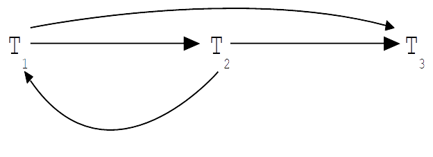
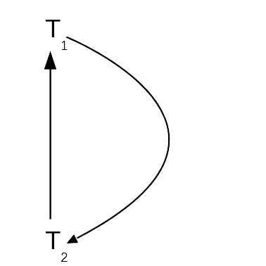

T1 T2 T3
write(x, 10)
write(x, 20)
write(x,30)
write(y,10)
a=read(y)

T1 T2
a=read(x)
b=read(x)
write(x,a-10)
write(x,b+20)
T1 T2
a=read(x)
b=read(x)
write(x,a-10)
write(x,b+20)

T1 T2
lock(u) a=read(u)
lock(v) write(v,10)
write(u,a+2)
lock(v) wait
lock(x) b=read(x)
unlock(v)
write(x,b+2)
lock(v)
unlock(x)
write(v,a+1)
unlock(v)
unlock(u)
T1 T2
lock(u) a=read(u)
lock(v) b=read(v)
write(v,b+10)
lock(v) wait
lock(u) wait
T1 T2
lock(u) a=read(u)
lock(u) wait
lock(v) write(v,a+1)
unlock(v,u)
lock(u) b=read(u)
write(u,b+1)
T1 T2 x,y
timestamp(t1)
a=read(x) x:t1
write(x,a-10)
timestamp(t2)
write(x,10) x:t1:t2
b=read(y) y:t2
write(y,a+1) y:t2:t1
abort
T1 T2 x
timestamp(t1)
a=read(x) x:t1
write(x,x-10)
timestamp(t2)
b=read(x) x:t1:t2
fail
forced abort
T1 T2 x
timestamp(t2)
timestamp(t1)
a=read(x) x:t1
write(x,a-10)
b=read(x) forced abort x:t1:t2